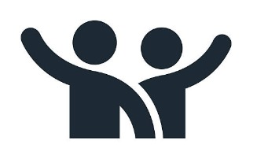
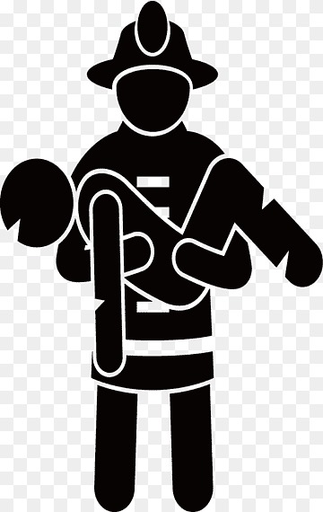

Bienvenido a Guardian Zero
Tu oportunidad para marcar la diferencia
La aplicación Guardian Zero está diseñada para permitir a los ciudadanos ofrecerse como voluntarios para actuar como rescatistas en situaciones de desastres naturales en México. Al mismo tiempo, facilita el contacto rápido con los servicios de rescate, permitiendo una respuesta más efectiva en casos de emergencia.

Voluntariado Activo: Únete a iniciativas y conviértete en un voluntario capacitado para enfrentar catástrofes.

Contactar Rápidamente: Accede a grupos de rescate en tiempo real para ofrecer o recibir ayuda.
Comunidad Guardian's: Conéctate con otros rescatistas y voluntarios, comparte experiencias y aprende juntos.